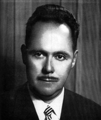

<style>
section {
        display: flex;
        flex-direction: row;
        align-items: center;
        justify-content: center;
        gap: 40px;
        margin: 40px 0;
    }


    .conteudo {
        max-width: 1000px;
        font-family: Arial, sans-serif;
        font-size: 16px;
        line-height: 1.6;
        color: #333;
        text-align: justify;
    }

    .conteudo p {
        
        margin-bottom: 16px;
    }
    img {
        width: 300px;
        height: auto;
        border-radius: 8px;
    }
</style>
<section>

    <div class="conteudo">

        <h2>FELICIANO MACHADO BRAGA</h2>
        
        <p>Nasceu em 19 de setembro de 1914, em Montes Claros/MG, mas foi criado em Buriti Alegre/GO, onde cursou o ensino fundamental. Fez o ensino médio em Uberlândia/MG e iniciou engenharia no Rio de Janeiro, mas voltou a Buriti Alegre para ajudar o pai em um comércio. Após a venda da loja, optou por cursar Direito na Universidade Federal de Goiás - UFG.<p> 
        <p>Após formado, trabalhou como advogado em Buriti Alegre e prestou concurso para promotor de justiça, atuando em cidades como Pedro Afonso, Caldas Novas e Paraúna. Posteriormente, aprovou-se para a magistratura, iniciando como juiz substituto em Anápolis, e depois exercendo o cargo em Posse, Nerópolis e Porto Nacional.</p>
        <p>Chegou a Porto Nacional em 1955, onde teve papel central no movimento pela criação do Estado do Tocantins, liderando o movimento pela autonomia do Norte de Goiás. Casou-se em 1958 com Hermione de Carvalho Machado, com quem teve seis filhos.</p>
        
        
        
    </div>
    <div class="imagem">
        
        </div>

    

    


</section>